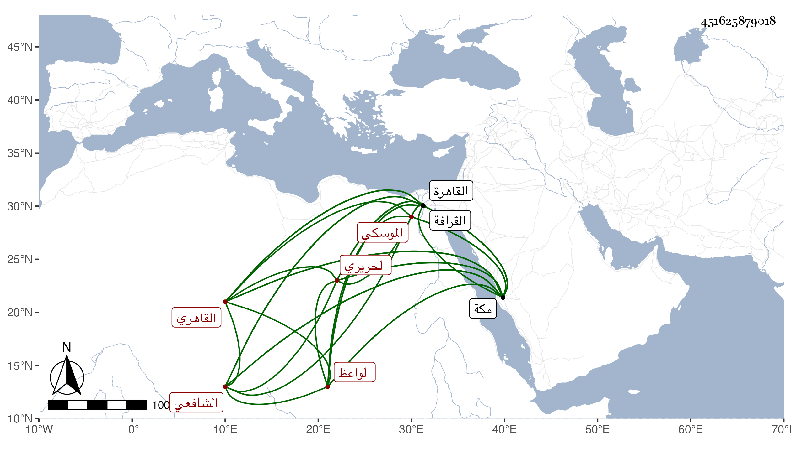

0902Sakhawi.DawLamic.ITO20230111-ara1.EIS1600.451625879018
Biography ID: 451625879018
إبراهيم بن علي بن حسن البرهان أبو إسحاق القاهري الموسكي الحريري الموردي الواعظ الشافعي . ولد بقنطرة الموسكي قريبا من زاوية ابن بطالة وحفظ القرآن عند الفخر عثمان المقسي وأخيه الشمس والعمدة وعرضها على العلم البلقيني والمناوي والعز الحنبلي وابن الديري في آخرين وبعض التنبيه وحضر في دروس فقيهه الفخر والجوجري وغيرهما بل كان أحد المقسمين في التنبيه والحاوي والمنهاج عند إسماعيل بن المغلى وأخذ عنه في النحو وغيره ولازم الديمي في قراءة كثير من الكتب كالبخاري والترغيب وكتبهما مع غيرهما من كتب الحديث وغيره بل قرأ على الديمي الجرومية وغيرها كألفية العراقي . وحج غير مرة وجاور وقرأ على العامة الحديث ولقيني بمكة في سنة أربع وتسعين فقرأ علي من البيوع من صحيح البخاري إلى الصيد والذبائح وهو نصفه وسمع بقراءة غيره باقيه بل كتب مصنفي في ختم البخاري وفي الميزان وقرأهما وحضر عندي بعض الدروس وقال لي إنه كان يتمنى الاجتماع بي في القاهرة للأخذ عني فما تيسر له وهو إنسان خير ساكن يقرأ البخاري والترغيب ونحوهما جيدا مع أنسة بالعربية وغيرها . مات بعد رجوعه من مكة وانقطاعه بالفالج نحو شهر في ربيع الثاني سنة خمس وتسعين ودفن بالقرافة رحمه الله وإيانا .
